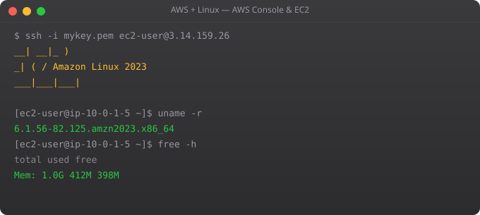

Your first EC2 instance is a milestone. Going from zero to a real Linux server running in the cloud, accessible from anywhere in the world, is both simple and empowering. AWS has made the process straightforward enough to complete in 10 minutes. This part walks through every step.
# 1. Go to aws.amazon.com/free
# 2. Click "Create a Free Account"
# 3. Enter email and account name
# 4. Add payment method (credit card -- free tier stays free)
# 5. Verify phone number
# 6. Choose Support Plan: Basic (Free)
# CRITICAL: Set up billing alerts immediately
# Billing > Budgets > Create Budget
# Budget amount: $5
# Alert at 80% ($4) and 100% ($5)# 1. Go to EC2 > Instances > Launch Instances
# 2. Name: my-first-server
# 3. AMI: Ubuntu Server 22.04 LTS (Free tier eligible)
# 4. Instance type: t2.micro or t3.micro (Free tier eligible)
# - 1 vCPU, 1 GB RAM -- enough for learning
# 5. Key pair: Create new
# - Name: my-key
# - Type: RSA, Format: .pem
# - DOWNLOAD and save securely -- you cannot regenerate it!
# 6. Network settings:
# - Allow SSH traffic from: My IP (not Anywhere!)
# - Allow HTTP traffic (optional)
# - Allow HTTPS traffic (optional)
# 7. Storage: 8 GiB gp3 (free tier: 30 GB max)
# 8. Launch instance!# Naming convention: [family][generation].[size]
# t3.micro = General purpose, gen 3, micro size
# Common families:
t3 -- General purpose, burstable CPU (most learning/small apps)
m6i -- General purpose, consistent CPU (production apps)
c6i -- Compute optimized (CPU-intensive workloads)
r6i -- Memory optimized (databases, caches)
g4dn-- GPU instances (ML inference, graphics)
# Sizes: nano, micro, small, medium, large, xlarge, 2xlarge...
# For learning: t2.micro or t3.micro (free tier)
# For small production apps: t3.small or t3.medium
# For web servers with 100+ users: t3.medium or m6i.large# Security group rules
# Inbound rules control what traffic can REACH your instance
# SSH from your IP only (NEVER allow 0.0.0.0/0 for SSH)
Type: SSH, Port: 22, Source: My IP (203.x.x.x/32)
# HTTP for web server
Type: HTTP, Port: 80, Source: Anywhere (0.0.0.0/0)
# HTTPS for web server
Type: HTTPS, Port: 443, Source: Anywhere (0.0.0.0/0)
# Custom application port
Type: Custom TCP, Port: 8080, Source: Anywhere
# Outbound rules: Allow all by default
# Your instance can reach the internet freely# Public IPs change every time you stop/start an instance
# Elastic IP = static IP that stays the same
# Allocate an Elastic IP:
# EC2 > Elastic IPs > Allocate Elastic IP address
# Associate with your instance
# IMPORTANT: Elastic IPs are FREE when associated with a running instance
# But cost ~$0.005/hr when NOT associated (to discourage hoarding)
# Always release Elastic IPs you are not usingStop shuts down the instance but preserves the EBS volume -- you can restart it later. Terminate permanently destroys the instance and (by default) its root volume. Use stop when you want to resume later. Use terminate to permanently delete. Data on the root volume is LOST on terminate.
Yes. Stop the instance. Actions > Instance Settings > Change Instance Type. Select new type. Start the instance. Takes 2-3 minutes. No data is lost. This is one of the advantages of cloud -- right-sizing without replacing hardware.
Download PuTTY or use Windows 11's built-in OpenSSH. In PuTTY: convert .pem to .ppk using PuTTYgen. Connect to: ubuntu@your-public-ip. On Windows 11: ssh -i "key.pem" ubuntu@your-ip directly in PowerShell.
Amazon Machine Image -- a pre-configured disk image used to launch instances. Ubuntu 22.04 LTS, Amazon Linux 2, Windows Server 2022 are all AMIs. You can also create your own AMI from a configured instance to launch identical servers quickly.
EC2 > Instances > click your instance > Public IPv4 address. Or from inside the instance: curl http://169.254.169.254/latest/meta-data/public-ipv4 or curl ifconfig.me
In Part 3, we SSH into your new EC2 instance and start working with Linux in the cloud.
← Back to Blog#!/bin/bash
# Add this as "User data" when launching EC2
# Runs automatically as root on first boot
set -e
LOG="/var/log/user-data.log"
exec > >(tee -a $LOG) 2>&1
echo "User data script started at $(date)"
# Update and install software
apt-get update -y
apt-get install -y nginx python3-pip git htop
# Configure application
pip3 install flask gunicorn
# Download and setup application
cd /opt
git clone https://github.com/myorg/myapp.git
cd myapp
pip3 install -r requirements.txt
# Create systemd service
cat > /etc/systemd/system/myapp.service << EOF
[Unit]
Description=My Flask Application
After=network.target
[Service]
User=ubuntu
WorkingDirectory=/opt/myapp
ExecStart=/usr/local/bin/gunicorn app:app --bind 0.0.0.0:8000
Restart=always
[Install]
WantedBy=multi-user.target
EOF
systemctl daemon-reload
systemctl enable myapp
systemctl start myapp
systemctl start nginx
echo "User data script completed at $(date)"aws ec2 create-launch-template --launch-template-name myapp-template --version-description "v1.0 -- base configuration" --launch-template-data '{
"ImageId": "ami-0287a05f0ef0e9d9a",
"InstanceType": "t3.micro",
"KeyName": "my-key",
"SecurityGroupIds": ["sg-0123456789abcdef"],
"IamInstanceProfile": {"Name": "MyAppInstanceProfile"},
"TagSpecifications": [{
"ResourceType": "instance",
"Tags": [{"Key": "Project", "Value": "myapp"}]
}],
"UserData": "IyEvYmluL2Jhc2gKYXB0IHVwZGF0ZSA..."
}'
# Launch from template
aws ec2 run-instances --launch-template LaunchTemplateName=myapp-template,Version='$Latest'